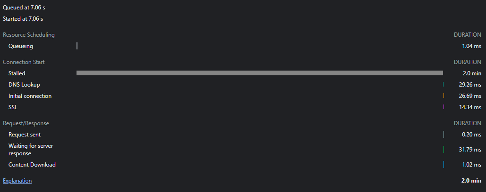
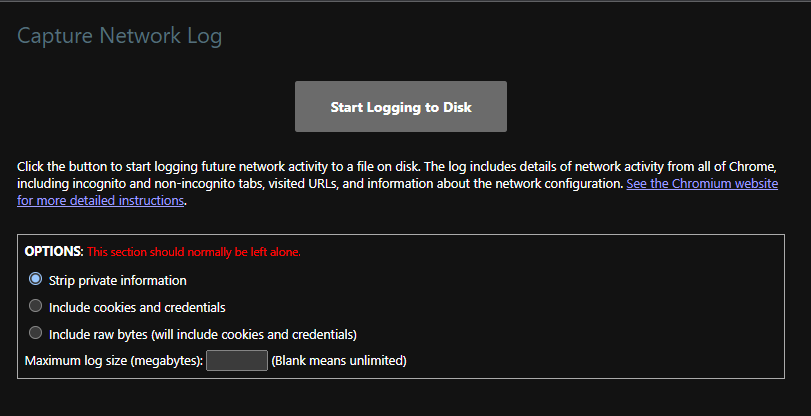
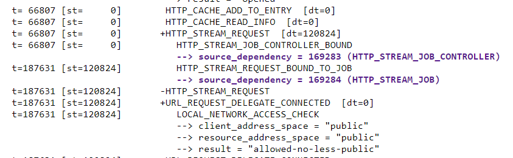
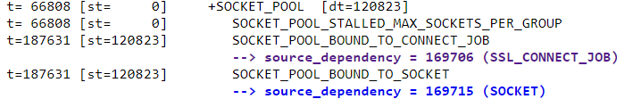
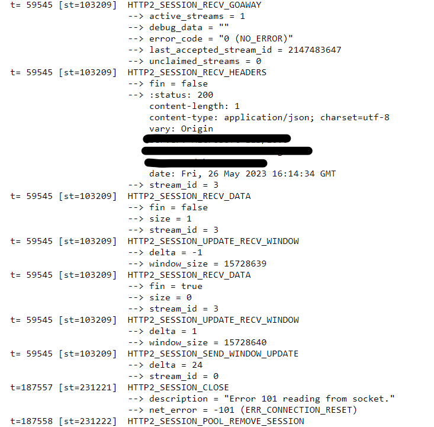

Chrome HTTP Request stuck in "Stalled" State
I got the chance to investigate a really odd bug where randomly network requests in Chrome would just hang. This would only occurr in our test environments at work and not in production. The request would hang for some long amount of time.. and then eventually complete successfully. The bug has been occurring for some time, but has been getting worse in Chrome. It got so bad that it was guaranteed that if you were using Chrome it was going to happen to you. Eventually it started happening in Firefox as well.. during an investor demo (what good is a demo if it doesn’t go up in flames?). That’s when I got roped in.
The first thing I did was attempt to replicate it and capture a .har file that I could share with anyone else that was interested. This part was easy - just popping open the network tab, navigating to the app on a test env, and then clicking every link that would trigger a network request. After about 30-40 seconds I had replicated the event

So we can clearly see here that the request took 2 minutes and the entirety of that time the connection was stuck in the stalled state. That indicates one of two things:
-
Chrome never attempted to make the network request at all. Perhaps the priority on the request was dropped, maybe there were too many connections open to that FQDN already.
-
In some situations chrome actually merges the CORS preflight requests into what it reports as
stalled. So it’s possible that there was a problem in the preflight request that caused the delay before the actual request happened.
I did a bit more testing to figure out the scope of the issue. On/Off VPN with multiple browsers would all replicate the problem just fine. In this particular situation the fact that we could replicate it across EVERYTHING made it pretty clear that it was something related to our server.. but what? If the request never actually hits the server what could be going on?
Chrome Network Log
One tool that chrome has to diagnose networking issues is hidden away at chrome://net-export. It generates a very VERY detailed log of everything network related that chrome is aware of.

I unchecked the strip private information option and told it to include cookies + credentials and started logging it to disk. Then I swapped back to my tab and replicated the issue. Waited a few seconds, and then went back and ended the capture session.
Once you get that capture file, you have to head over to https://netlog-viewer.appspot.com and import it. There’s a TON of information here, and honestly I didn’t even look at half of it. The only two things I cared about were the “Events” and “Timeline” sections. The Timeline really makes no sense until you have a idea of when your actual network event happened, so we can skip that and jump right over to Events
There will likely be a lot of events. The “filter” at the top never worked for me given the sheer size of the events.. but scrolling through them all was just fine and eventually I found the URL request that caused the issue. If you click on the event it will display a bunch of debug information about the request.

As you can see.. suddenly there’s a HUGE jump in time from 66807 to 187631. We’ve confirmed now that this is a problem that’s occurring within the CORS preflight request specifically, and it’s just getting rolled into the stalled state. The log viewer makes it trivial to dig down into the events and if you click on the details of the HTTP_STREAM_JOB_CONTROLLER event you can see some more details.

Here again, we see that there is a definitely delay when it attempts to call HTTP_STREAM_REQUEST_STARTED_JOB
And now we can easily see the problem: SOCKET_POOL_STALLED_MAX_SOCKETS_PER_GROUP
In HTTP1.1 each tab in your browser is configured to only make a certain number of requests per FQDN at the same time.This is one of the reasons why we load “static assets” on a different subdomain. By loading static assets on a separate FQDN we can increase the objects that are simultaneously loaded in our tab providing a better experience (for some definition of experience) to our user. In HTTP2, this restriction is across every single tab in your browser. For chrome, it can only instantiate 6 concurrent connections to an FQDN. This is because your connections are persistent in http2 and you don’t need to deal with the initialization handshakes on every request. The connection, once opened, is continually reused.
For some reason, the socket pool dedicated to this particular FQDN gets filled up and so it can’t actually make the next request. So it just sits there.. until suddenly a socket is available (2 minutes later) and it is able to complete the rest of the request as expected. The “suddenly” is likely due to the default socket timeout. Once that timeout is hit, Chrome kills the connection and opens a new one and suddenly our request works again.
We can dig even further! Since we know that this is happening on an HTTP2 call, we can filter our events to only show us the http2 connections and that paints a more serious picture!

Every one of our http2 sockets is getting sent a GOAWAY frame by the server.. but notice that it says NO_ERROR. This generally indicates that the server is telling the client that it will be shutting down this socket and. The GOAWAY frame also tells the client what the last stream that it processed was. This is so that the client can resend any data that it needs to on a new connection. What should happen is that after this frame, the connection is ended by both parties and we move on to a new one. In practice, it happens after a following GOAWAY frame that indicates the connection is now dead. Except that final disconnect frame is never sent. So as far as chrome is concerned, we’re still happily connected so it returns the connection to the pool. But the server has disconnected.
So it just sits there trying to use the connection again, times out, and then closes and opens a new connection! And so we tracked down the mysterious slow-down and also used some cool tools in the process!
One thing I do want to note: This seems like a really straight forward problem - but that’s just in hindsight. In the moment there’s lots of googling and staring off into space trying to remember obscure keywords. I have a really bad memory, and so one of the things I do is memorize keywords/ideas rather than content because there’s just too much to remember. In this way I can ensure that I can find the pieces of information I need when I need to. In this case the keys things were:
-
chrome has some kind of detailed network log
-
browsers like to fold CORS requests into the main request for reporting
-
http2 has a max connection limit across your browser
The rest of the information used is all derivable from those keys and a search engine.